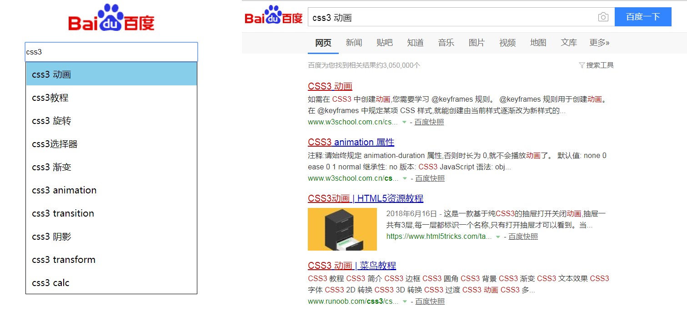
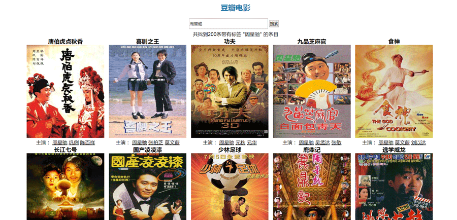

web前端
前端自学
在此期间自学了前端相关知识，包括：静态页面的开发，css3属性的学习，jquery库的使用，利用bootstrap框架搭建响应式页面、移动页面的开发，等等。
保密
云南
深圳
weibo.sina.com
乐观积极，敢于挑战，勇于钻研。
篮球、电影、游戏
HTML
CSS
JS
JQ
bootstrap
前端自学
在此期间自学了前端相关知识，包括：静态页面的开发，css3属性的学习，jquery库的使用，利用bootstrap框架搭建响应式页面、移动页面的开发，等等。
这是我在学习JS的时候一个小练习，综合运用了JS的元素获取、碰撞检测、运动框架等方式完成。
点击预览这是我在学习JS的时候一个小练习，综合运用了鼠标移动事件，获取鼠标移动过程中的坐标，利用对应比例关系达到图片放大镜的效果。
点击预览这是我在学习ajax的时候一个小练习，利用百度提供的数据接口，采用jsonP方法解决跨域问题。
 点击预览这是我在学习ajax的时候一个小练习，利用百度提供的数据接口，采用jsonP方法解决跨域问题。
 点击预览这是我在学习JS的时候一个小练习，综合运用了JS的定时器、运动框架等方式完成。
点击预览这是我在学习JS的时候一个小练习，综合运用了JS的定时器、运动框架等方式完成。
点击预览